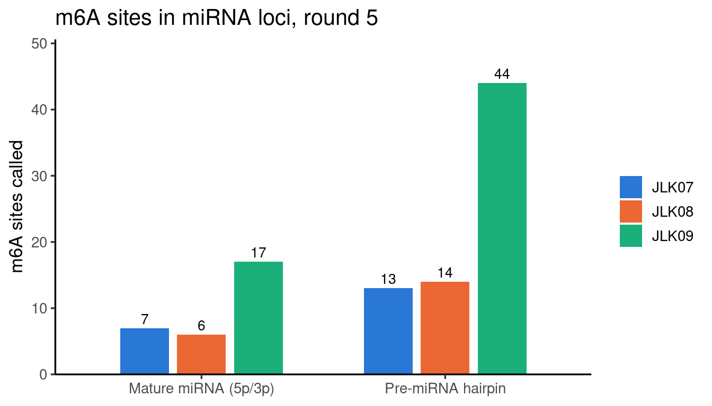
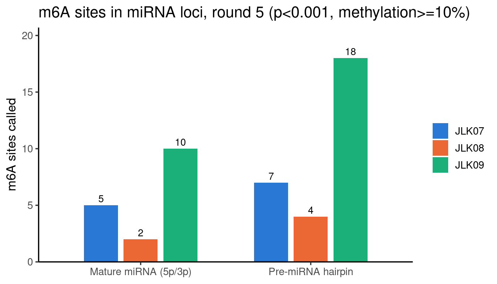

Last updated: 2026-08-19
Checks: 5 2
Knit directory: camseq-m6a/
This reproducible R Markdown analysis was created with workflowr (version 1.7.1). The Checks tab describes the reproducibility checks that were applied when the results were created. The Past versions tab lists the development history.
The R Markdown file has unstaged changes. To know which version of
the R Markdown file created these results, you’ll want to first commit
it to the Git repo. If you’re still working on the analysis, you can
ignore this warning. When you’re finished, you can run
wflow_publish to commit the R Markdown file and build the
HTML.
Great job! The global environment was empty. Objects defined in the global environment can affect the analysis in your R Markdown file in unknown ways. For reproduciblity it’s best to always run the code in an empty environment.
The command set.seed(20250226) was run prior to running
the code in the R Markdown file. Setting a seed ensures that any results
that rely on randomness, e.g. subsampling or permutations, are
reproducible.
Great job! Recording the operating system, R version, and package versions is critical for reproducibility.
Nice! There were no cached chunks for this analysis, so you can be confident that you successfully produced the results during this run.
Using absolute paths to the files within your workflowr project makes it difficult for you and others to run your code on a different machine. Change the absolute path(s) below to the suggested relative path(s) to make your code more reproducible.
| absolute | relative |
|---|---|
| /project/xinhe/xsun/website/camseq-m6a/code/qc_v3_helpers.R | code/qc_v3_helpers.R |
| /project/xinhe/xsun/website/camseq-m6a/code/compare_db_helpers.R | code/compare_db_helpers.R |
Great! You are using Git for version control. Tracking code development and connecting the code version to the results is critical for reproducibility.
The results in this page were generated with repository version a64a092. See the Past versions tab to see a history of the changes made to the R Markdown and HTML files.
Note that you need to be careful to ensure that all relevant files for
the analysis have been committed to Git prior to generating the results
(you can use wflow_publish or
wflow_git_commit). workflowr only checks the R Markdown
file, but you know if there are other scripts or data files that it
depends on. Below is the status of the Git repository when the results
were generated:
Ignored files:
Ignored: .Rhistory
Unstaged changes:
Modified: analysis/round5_mirna_sites.Rmd
Note that any generated files, e.g. HTML, png, CSS, etc., are not included in this status report because it is ok for generated content to have uncommitted changes.
These are the previous versions of the repository in which changes were
made to the R Markdown (analysis/round5_mirna_sites.Rmd)
and HTML (docs/round5_mirna_sites.html) files. If you’ve
configured a remote Git repository (see ?wflow_git_remote),
click on the hyperlinks in the table below to view the files as they
were in that past version.
| File | Version | Author | Date | Message |
|---|---|---|---|---|
| Rmd | a64a092 | XSun | 2026-08-19 | update |
| html | a64a092 | XSun | 2026-08-19 | update |
Round 5’s called m6A sites (QC – round 5), intersected with miRNA loci, per sample (JLK07, JLK08, JLK09) – no merging across samples.
A note on terminology, since this tripped us up while building this: there are three distinct levels of “miRNA” region, and only two of them are available in any standard annotation:
| Level | What it is | Available here? |
|---|---|---|
| pri-miRNA | The full-length primary Pol II transcript (often kb-scale, capped/polyadenylated) | No – not systematically annotated anywhere (Ensembl, UCSC, miRBase all lack it); boundaries aren’t well characterized for most loci |
| pre-miRNA (hairpin) | The ~60-100bp stem-loop released by Drosha cleavage from the pri-miRNA | Yes – premirna_hairpin below |
| Mature miRNA (5p/3p arm) | The ~20-24nt product after Dicer processing | Yes – mature_mirna below |
miRBase’s own GFF3 calls the hairpin feature
miRNA_primary_transcript, which is misleading – despite the
name, it is not the true pri-miRNA; miRBase’s own file
header says so explicitly (“these sequences do not represent the full
primary transcript, rather a predicted stem-loop portion that includes
the precursor miRNA”).
Source: miRBase v23, GRCh38 primary assembly
(hsa.gff3, NCBI_Assembly:GCA_000001405.15) –
1,858 pre-miRNA hairpin loci, 3,008 mature 5p/3p arm loci.
Sites: round 5’s canonical filtered output
(report_sites/filtered/genome.tsv.gz, all 3 samples,
pipeline default cutoffs min_uncon=1,
min_depth=10, min_ratio=0.05,
min_pval=0.05), intersected via
GenomicRanges::findOverlaps (strand-aware) against each
resolution’s loci separately.
Extraction script:
/project/xinhe/xsun/camseq/2.qc/extract_mirna_sites.R (in
the pipeline directory, not this site’s repo).
library(data.table)
library(ggplot2)
library(knitr)
library(kableExtra)
library(DT)
MIRNA_DIR <- "/project/xinhe/xsun/camseq/processed_new/round5_JL_merged/report_sites/mirna"
SAMPLES <- c("JLK07", "JLK08", "JLK09")
RESOLUTIONS <- c(premirna_hairpin = "Pre-miRNA hairpin", mature_mirna = "Mature miRNA (5p/3p)")
read_one <- function(sample, resolution) {
f <- file.path(MIRNA_DIR, sprintf("%s_%s_sites.tsv", sample, resolution))
dt <- fread(f)
dt[, `:=`(sample = sample, resolution = RESOLUTIONS[[resolution]])]
dt
}
all_sites <- rbindlist(lapply(SAMPLES, function(s) {
rbindlist(lapply(names(RESOLUTIONS), function(r) read_one(s, r)))
}))summary_dt <- all_sites[, .(n_sites = .N, n_loci = uniqueN(mirna_name)), by = .(sample, resolution)]
kable(summary_dt) %>%
kable_styling(bootstrap_options = c("striped", "hover", "condensed"), full_width = FALSE)| sample | resolution | n_sites | n_loci |
|---|---|---|---|
| JLK07 | Pre-miRNA hairpin | 13 | 10 |
| JLK07 | Mature miRNA (5p/3p) | 7 | 7 |
| JLK08 | Pre-miRNA hairpin | 14 | 10 |
| JLK08 | Mature miRNA (5p/3p) | 6 | 6 |
| JLK09 | Pre-miRNA hairpin | 44 | 27 |
| JLK09 | Mature miRNA (5p/3p) | 17 | 14 |
ggplot(summary_dt, aes(x = resolution, y = n_sites, fill = sample)) +
geom_col(position = position_dodge(width = 0.7), width = 0.6) +
geom_text(aes(label = n_sites), position = position_dodge(width = 0.7), vjust = -0.4, size = 3.5) +
scale_fill_manual(values = c(JLK07 = "#2a78d6", JLK08 = "#eb6834", JLK09 = "#1baf7a")) +
labs(x = NULL, y = "m6A sites called", fill = NULL, title = "m6A sites in miRNA loci, round 5") +
scale_y_continuous(expand = expansion(mult = c(0, 0.15))) +
theme_classic(base_size = 13)
| Version | Author | Date |
|---|---|---|
| a64a092 | XSun | 2026-08-19 |
Same intersection, but on a more stringent cutoff than the pipeline
default above (min_uncon=1, min_depth=10 held
fixed, min_pval<0.001, min_ratio>=0.10),
reading from the pre-computed QC
sweep output instead of the canonical filtered file. JLK09’s excess
over JLK07/JLK08 persists at this stricter cutoff – not just an artifact
of the lenient default threshold picking up more marginal/noisy
calls.
source("/project/xinhe/xsun/website/camseq-m6a/code/qc_v3_helpers.R")
source("/project/xinhe/xsun/website/camseq-m6a/code/compare_db_helpers.R")
BASE <- "/project/xinhe/xsun/camseq/processed_new/round5_JL_merged"
P_STRICT <- "0.001"
R_STRICT <- "0.10"
mirna <- load_mirna_loci("/project/xinhe/xsun/camseq/data/reference/mirna/hsa.gff3")
dt_strict <- qc_read_sweep(BASE, "genome", "persample", P_STRICT, R_STRICT)
gr_strict <- GRanges(seqnames = dt_strict$chrom, ranges = IRanges(dt_strict$pos, dt_strict$pos), strand = dt_strict$strand)
strict_sites <- rbindlist(lapply(names(mirna), function(res_key) {
gr_ref <- mirna[[res_key]]
hits <- findOverlaps(gr_strict, gr_ref, ignore.strand = FALSE)
overlap_dt <- cbind(dt_strict[queryHits(hits)], mirna_name = mcols(gr_ref)$name[subjectHits(hits)])
rbindlist(lapply(SAMPLES, function(s) {
passing <- qc_sample_passing(overlap_dt, s, as.numeric(R_STRICT), as.numeric(P_STRICT))
passing <- unique(passing[, .(
chrom, pos, strand, motif, mirna_name,
Depth = get(paste0("Depth_", s)), Uncon = get(paste0("Uncon_", s)),
methylation_pct = get(paste0("Ratio_", s)) * 100, pval = get(paste0("pval_", s))
)])
if (nrow(passing) == 0) return(NULL)
passing[, `:=`(sample = s, resolution = if (res_key == "precursor") "Pre-miRNA hairpin" else "Mature miRNA (5p/3p)")]
passing
}))
}))
strict_summary <- strict_sites[, .(n_sites = .N, n_loci = uniqueN(mirna_name)), by = .(sample, resolution)]
kable(strict_summary) %>%
kable_styling(bootstrap_options = c("striped", "hover", "condensed"), full_width = FALSE)| sample | resolution | n_sites | n_loci |
|---|---|---|---|
| JLK07 | Pre-miRNA hairpin | 7 | 7 |
| JLK08 | Pre-miRNA hairpin | 4 | 4 |
| JLK09 | Pre-miRNA hairpin | 18 | 15 |
| JLK07 | Mature miRNA (5p/3p) | 5 | 5 |
| JLK08 | Mature miRNA (5p/3p) | 2 | 2 |
| JLK09 | Mature miRNA (5p/3p) | 10 | 9 |
ggplot(strict_summary, aes(x = resolution, y = n_sites, fill = sample)) +
geom_col(position = position_dodge(width = 0.7), width = 0.6) +
geom_text(aes(label = n_sites), position = position_dodge(width = 0.7), vjust = -0.4, size = 3.5) +
scale_fill_manual(values = c(JLK07 = "#2a78d6", JLK08 = "#eb6834", JLK09 = "#1baf7a")) +
labs(x = NULL, y = "m6A sites called", fill = NULL, title = "m6A sites in miRNA loci, round 5 (p<0.001, methylation>=10%)") +
scale_y_continuous(expand = expansion(mult = c(0, 0.15))) +
theme_classic(base_size = 13)
DT::datatable(
strict_sites[, .(sample, resolution, mirna_name, chrom, pos, strand, motif, Depth, Uncon, methylation_pct, pval)],
caption = htmltools::tags$caption(
style = "caption-side: left; text-align: left; color:black; font-size:150%;",
"m6A sites in miRNA loci, round 5, p<0.001 & methylation>=10%"
),
options = list(pageLength = 15),
filter = "top"
) %>%
DT::formatRound(columns = "methylation_pct", digits = 1) %>%
DT::formatSignif(columns = "pval", digits = 3)For context (not our data): the same miRNA-loci intersection applied to m6A RNA modifications are measured at single-base resolution across the mammalian transcriptome, PMID: 35288668’s HSPC d9 dataset (PMID 35288668, single-nucleotide resolution, 23,833 total sites) – a rough check of how often any published m6A site falls in a miRNA locus at all.
source("/project/xinhe/xsun/website/camseq-m6a/code/compare_db_helpers.R")
paper1_d9 <- load_paper1_sheet("/project/xinhe/xsun/camseq/pipeline/data/m6a_PMID35288668.xlsx", 8)
mirna <- load_mirna_loci("/project/xinhe/xsun/camseq/data/reference/mirna/hsa.gff3")
p1_chrom <- sub("-.*", "", paper1_d9$site)
p1_pos <- as.integer(sub(".*-", "", paper1_d9$site))
gr_p1 <- GRanges(seqnames = p1_chrom, ranges = IRanges(p1_pos, p1_pos))
hp_hits <- suppressWarnings(findOverlaps(gr_p1, mirna$precursor, ignore.strand = TRUE))
mt_hits <- suppressWarnings(findOverlaps(gr_p1, mirna$mature, ignore.strand = TRUE))
paper1_mirna <- rbind(
cbind(paper1_d9[queryHits(hp_hits)], mirna_name = mcols(mirna$precursor)$name[subjectHits(hp_hits)], resolution = "Pre-miRNA hairpin"),
cbind(paper1_d9[queryHits(mt_hits)], mirna_name = mcols(mirna$mature)$name[subjectHits(mt_hits)], resolution = "Mature miRNA (5p/3p)")
)
setnames(paper1_mirna, "m6a_pct", "methylation_pct")
kable(paper1_mirna, caption = "Paper 1 HSPC d9 sites overlapping a miRNA locus") %>%
kable_styling(bootstrap_options = c("striped", "hover", "condensed"), full_width = FALSE)| site | methylation_pct | mirna_name | resolution |
|---|---|---|---|
| 3-10280451 | 54.5533 | hsa-mir-12127 | Pre-miRNA hairpin |
| 14-74480187 | 9.2335 | hsa-mir-4709 | Pre-miRNA hairpin |
| 21-33550687 | 25.3690 | hsa-mir-6501 | Pre-miRNA hairpin |
| 14-74480187 | 9.2335 | hsa-miR-4709-5p | Mature miRNA (5p/3p) |
# cross-check against round5's own cross-sample-shared miRNA loci above
p1_loci <- sub("-5p$|-3p$", "", paper1_mirna$mirna_name)
p1_loci <- unique(sub("^hsa-miR-", "hsa-mir-", p1_loci))
shared_loci <- unique(sub("-5p$|-3p$", "", shared$mirna_name))
shared_loci <- unique(sub("^hsa-miR-", "hsa-mir-", shared_loci))
in_both <- intersect(p1_loci, shared_loci)
if (length(in_both) > 0) {
cat(sprintf(
"%d of Paper 1's miRNA-overlapping loci (%s) also appear in round 5's own cross-sample-shared list above.\n",
length(in_both), paste(in_both, collapse = ", ")
))
}2 of Paper 1's miRNA-overlapping loci (hsa-mir-12127, hsa-mir-6501) also appear in round 5's own cross-sample-shared list above.Searchable/sortable – filter by sample, resolution, or miRNA name.
DT::datatable(
all_sites[, .(sample, resolution, mirna_name, chrom, pos, strand, motif, Depth, Uncon, methylation_pct, pval)],
caption = htmltools::tags$caption(
style = "caption-side: left; text-align: left; color:black; font-size:150%;",
"m6A sites in miRNA loci, round 5"
),
options = list(pageLength = 15),
filter = "top"
) %>%
DT::formatRound(columns = "methylation_pct", digits = 1) %>%
DT::formatSignif(columns = "pval", digits = 3)
sessionInfo()R version 4.2.0 (2022-04-22)
Platform: x86_64-pc-linux-gnu (64-bit)
Running under: Red Hat Enterprise Linux 8.10 (Ootpa)
Matrix products: default
BLAS/LAPACK: /software/openblas-0.3.13-el8-x86_64/lib/libopenblas_skylakexp-r0.3.13.so
locale:
[1] LC_CTYPE=C.UTF-8 LC_NUMERIC=C LC_TIME=C.UTF-8
[4] LC_COLLATE=C.UTF-8 LC_MONETARY=C.UTF-8 LC_MESSAGES=C.UTF-8
[7] LC_PAPER=C.UTF-8 LC_NAME=C LC_ADDRESS=C
[10] LC_TELEPHONE=C LC_MEASUREMENT=C.UTF-8 LC_IDENTIFICATION=C
attached base packages:
[1] stats4 stats graphics grDevices utils datasets methods
[8] base
other attached packages:
[1] GenomicRanges_1.50.2 GenomeInfoDb_1.34.9 IRanges_2.32.0
[4] S4Vectors_0.36.2 BiocGenerics_0.44.0 eulerr_7.0.2
[7] forcats_1.0.0 DT_0.22 kableExtra_1.4.1
[10] knitr_1.51 ggplot2_3.4.2 data.table_1.14.4
[13] workflowr_1.7.1
loaded via a namespace (and not attached):
[1] Rcpp_1.1.1-1.1 svglite_2.1.0 getPass_0.2-2
[4] ps_1.7.0 rprojroot_2.0.3 digest_0.6.29
[7] utf8_1.2.2 cellranger_1.1.0 R6_2.5.1
[10] evaluate_0.15 httr_1.4.8 pillar_1.9.0
[13] zlibbioc_1.44.0 rlang_1.1.2 readxl_1.4.2
[16] otel_0.2.0 rstudioapi_0.14 whisker_0.4
[19] callr_3.7.0 jquerylib_0.1.4 R.oo_1.24.0
[22] R.utils_2.11.0 rmarkdown_2.31 labeling_0.4.2
[25] stringr_1.5.0 htmlwidgets_1.6.2 RCurl_1.98-1.12
[28] munsell_0.5.0 compiler_4.2.0 httpuv_1.6.5
[31] xfun_0.59 pkgconfig_2.0.3 systemfonts_1.0.4
[34] htmltools_0.5.7 tidyselect_1.2.0 tibble_3.2.1
[37] GenomeInfoDbData_1.2.9 fansi_1.0.3 viridisLite_0.4.0
[40] dplyr_1.1.2 withr_2.5.0 later_1.3.0
[43] R.methodsS3_1.8.1 bitops_1.0-7 grid_4.2.0
[46] jsonlite_2.0.0 gtable_0.3.0 lifecycle_1.0.4
[49] git2r_0.30.1 magrittr_2.0.3 scales_1.2.0
[52] cli_3.6.2 stringi_1.7.6 XVector_0.38.0
[55] farver_2.1.0 fs_1.5.2 promises_1.2.0.1
[58] xml2_1.3.3 bslib_0.3.1 ellipsis_0.3.2
[61] generics_0.1.3 vctrs_0.6.1 tools_4.2.0
[64] glue_1.6.2 crosstalk_1.2.0 processx_3.5.3
[67] fastmap_1.1.0 yaml_2.3.5 colorspace_2.0-3
[70] sass_0.4.1